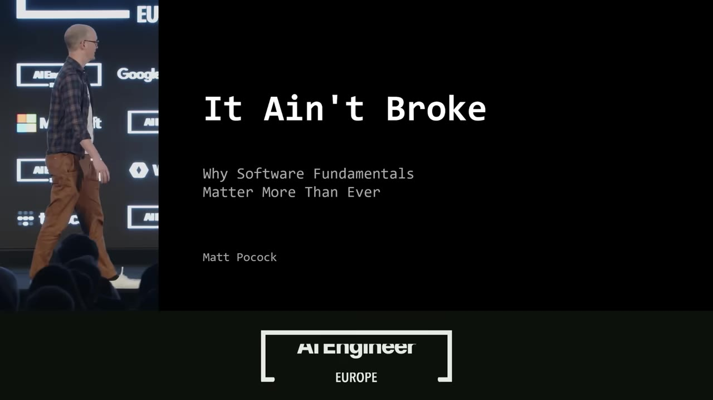
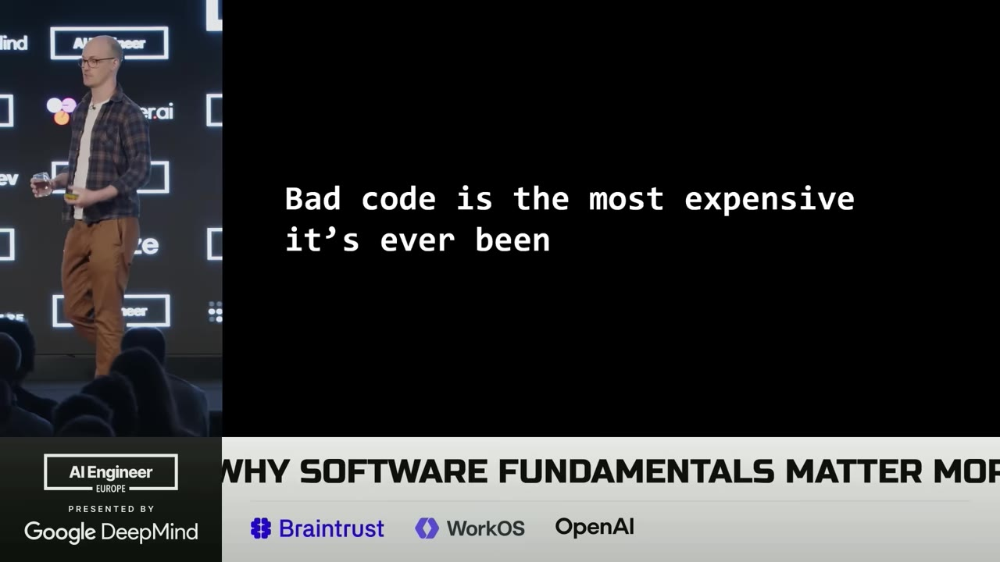
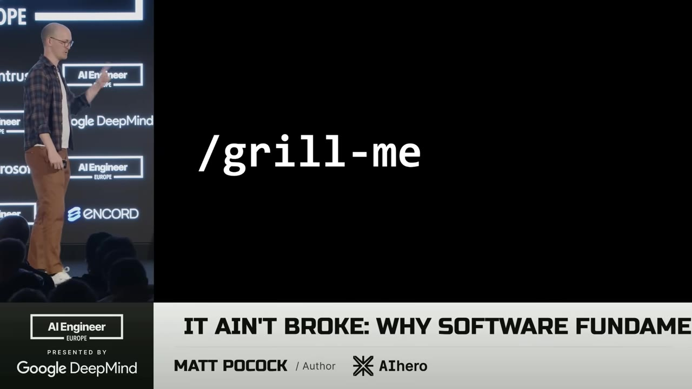
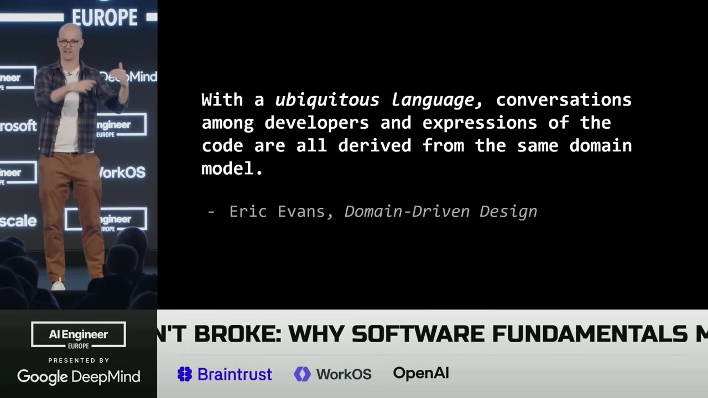
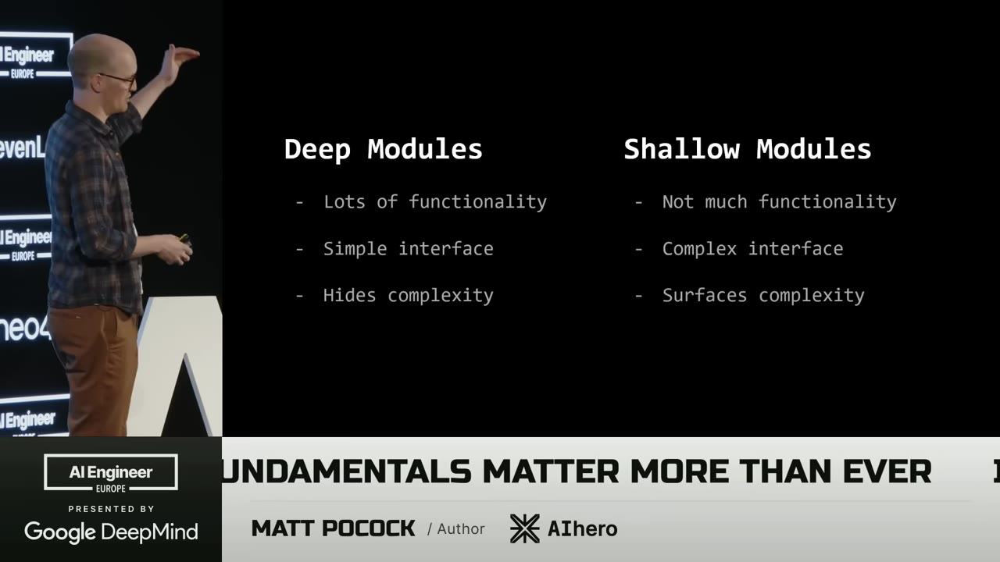
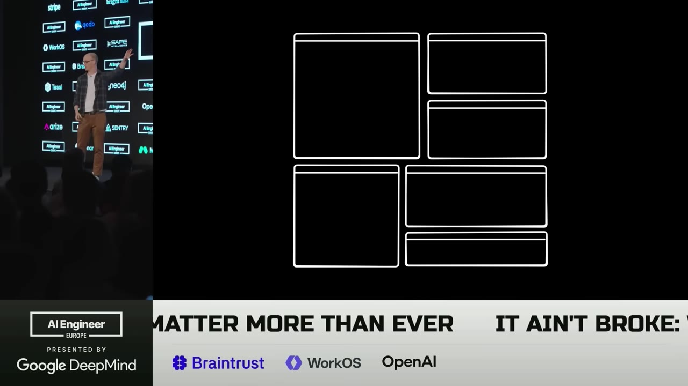
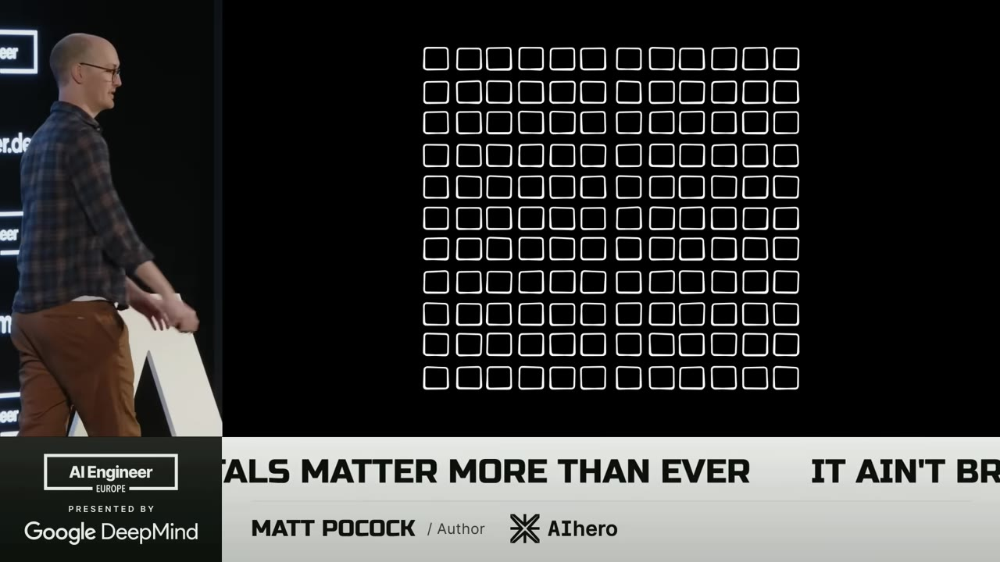

Matt Pocock spent a course's worth of curriculum testing the specs-to-code dream, watched it produce worse code every iteration, and went back to twenty-year-old books to figure out why.
Watch on YouTubePocock opens with a message he hopes is comforting for anyone who thinks their skill set is now worthless: software fundamentals matter more than they ever have. He's been teaching a course — provocatively titled "Claude Code for Real Engineers" — and building its curriculum forced him to confront the specs-to-code movement: write a specification, let AI turn it into code, and when something breaks, you never look at the code. You change the spec, run the compiler again, get more code.
He tried it. He tried not to look at the code, then looked anyway.

I would get code out, and then I would run it, I would get worse code. I did it again, I got even worse code. I kept running the compiler, and I would just end up with garbage.— Matt Pocock
The idea propping up specs-to-code is that code is cheap — so why read it. Pocock disagrees. He reaches for two old books to explain what he was watching happen. Ousterhout's A Philosophy of Software Design defines complexity as anything in a system's structure that makes it hard to understand and change; a bad codebase is one you can't change without causing bugs. The Pragmatic Programmer has a chapter on software entropy: change a codebase while thinking only about the change, not the design of the whole system, and it gets worse and worse. That was exactly the specs-to-code loop.

First failure: you had a good idea in your head and the AI built something else. The Pragmatic Programmer's line is that no one knows exactly what they want — there's a communication barrier, and talking to the AI is really the AI gathering requirements. Frederick P. Brooks' The Design of Design names the thing floating between two designers: the design concept, the invisible theory of what you're building. It isn't an asset. You can't put it in a markdown file. Pocock and the AI didn't share one.
So he wrote a skill. Three lines that tell the AI to interview you relentlessly, walking down each branch of the design tree, resolving dependencies between decisions one at a time.

Don't at me on this, but I personally believe this is better than the default plan mode. Plan mode is extremely eager to create an asset — it really wants to create a plan and start working. It's a lot nicer to reach a shared design concept first.— Matt Pocock
Second failure: you and the AI talk at cross-purposes, it uses too many words, you're not speaking the same language. Pocock recognizes this from working with domain experts — build something on microchips you don't understand, and you end up translating their terms into code neither of you really follows. The answer comes from domain-driven design and its idea of a ubiquitous language.

In practice it's a markdown file of terms you and the AI hold in common — a /ubiquitous-language skill scans the codebase, pulls the terminology, and writes the tables. Pocock keeps it open while planning. Reading the AI's thinking traces, he found it not only improved planning but let the AI think less verbosely, so the implementation lined up with the plan.
Third failure: aligned, correct, still broken. The obvious move is feedback loops — static types (if you're building front-end and not handing the LLM browser access, you need to), automated tests. But the LLM doesn't use feedback loops the way a veteran does. It does too much at once, dumps a huge amount of code, then thinks to type-check. The Pragmatic Programmer calls this outrunning your headlights: the rate of feedback is your speed limit.
That points at TDD — write the test first, make it pass, refactor. But testing is hard because every test is a stack of dependent decisions: how big a unit, what to mock, which behaviors. And those decisions get easier when the codebase is good. Ousterhout's prescription: few large, deep modules with simple interfaces, not many shallow ones.

lots of functionality, simple interface, hides complexity — you can look inside, but you don't need to.
not much functionality, complex interface, surfaces complexity — and AI loves generating these.
A codebase of shallow modules is a field of tiny blobs the AI has to walk through and navigate. It tries to explore, can't find the right module in time, misses the dependencies, and ends up not understanding your code. The same code restructured into deep modules looks different: boundaries, with interfaces on top.

Pocock has a skill for the conversion — improve-codebase-architecture — a reusable set of steps that hunts for related code and wraps it in a deep module. The payoff is testability: the boundaries are simple, so you test at the interface and verify at the interface. It's a codebase that rewards TDD.
Last failure: the loops work, you ship more code than ever, and you're more tired than you've ever been. A shallow-module codebase makes it worse — you, not just the AI, have to keep all of it in your head. Deep modules let you treat each one as a gray box: design the interface, don't review every line inside. Not for finance or anything critical — but for most modules, if the boundary is testable and you understand the purpose, you can design it from the outside and let the AI handle the blob.

This is why modules have to live in your ubiquitous language and your planning skills — Pocock's write-a-PRD skill is specific about which modules and interfaces change. It traces back to Kent Beck: invest in the design of the system every day. Specs-to-code does the opposite — it divests from design. Think of AI as a great tactical programmer, a sergeant making changes on the ground. You're the strategist above it, and that takes the fundamentals we've used for twenty years.
Code is not cheap. That's the message I want you to take away. Code is important.— Matt Pocock